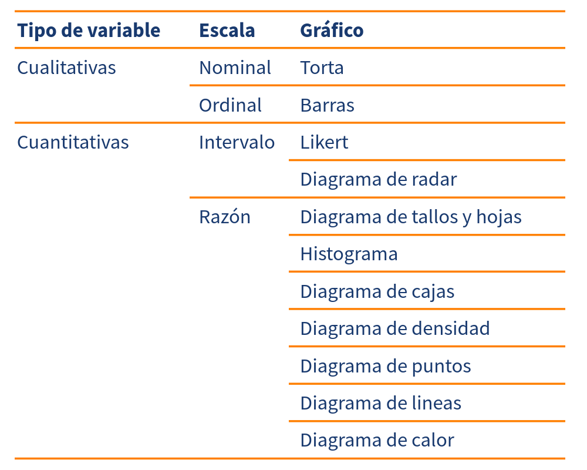
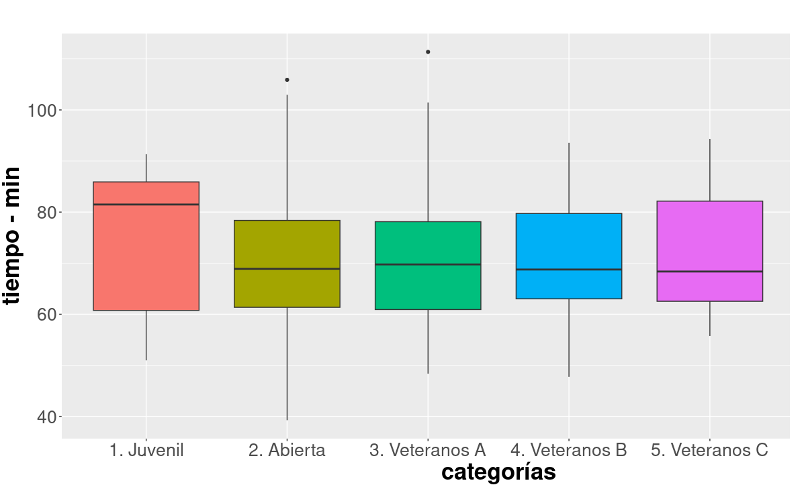

Visualización de datos
Métodos y Simulación Estadística
“Se denomina gráfico a una representación visual de una serie de datos, representación que tiene como finalidad dar una rápida noción acerca de volúmenes, cantidades y porcentajes, estableciendo comparaciones”.
enciclopedia.net
Elegir el gráfico adecuado es muy importante, pues existen diferentes alternativas y se debe escoger el apropiado para representar los datos. El tipo de dato determina el tipo de gráfico así:
Tabla 1.4 : Tipos de gráficas por tipo de variable Variables cualitativas
Diagráma circular (Tortas)
Este tipo de gráficos se utiliza para variables cualitativas medidas en escala nominal.
Fuente : Unicifras Pontificia Universidad Javeriana Cali
El gráfico permite resaltar la gran participación de los estudiantes en el sector Cultural con un 74.5%
Diagrama de barras
El diagrama de barras se utiliza para representar variables cualitativas en escala ordinal. Es necesario que los valores representados sigan el orden de la escala.
Barras con dos variables
Este diagrama se emplea para representar dos variables cualitativas que pueden ser de escala nominal u ordinal.
Fuente :juanchocorrelon
Variables cualitativas
Diagrama de árbol
The decimal point is 1 digit(s) to the right of the | 4 | 89 5 | 02234 5 | 555566666788899 6 | 00000011111122222333344444 6 | 5555666677888899 7 | 0000011122233333333344 7 | 555666678888999 8 | 011123334 8 | 5556778899 9 | 02334 9 | 67 10 | 1 10 | 11 | 1
Fuente:juanchocorrelon
Este diagrama ordena los datos de manera que se puede determinar tanto el mínimo (48 min) como el máximo (111 min) , además de visualizar donde están la mayor concentración de ellos.
El diagrama divide los datos en dos partes :
- tallo : dígitos delanteros
- hoja : últimos dígitos
4 | 89 : representa 48 minutos que corresponde al mínimo seguido de 49 5 | 0 : 50 minutos
Histograma
El histograma es uno de los gráficos más utilizados para representar variables cuantitativas y permite resumir por rangos los diferentes datos. Es una buena forma de visualizar la distribución de los datos y su forma.
Cada barra representa la cantidad de observaciones que se encuentra en cada uno de los intervalos establecidos, permitiendo visualizar el intervalo con mayor concentración de datos, además de la forma que tiene su distribución.
Fuente :juanchocorrelon
De densidad
Este diagrama corresponde a un contorno suavizado del histograma que permite visualizar claramente la forma de los datos.
 Figura 1.19 Distribución del tiempo carrera La Luz
2022
Figura 1.19 Distribución del tiempo carrera La Luz
2022
De cajas
Es uno de las representaciones gráficas más utilizadas, pues además de los elementos y características que permite visualizar de las variables, permite comparar los resultados de dos o más grupos.

Figura 1.20 Comparación distribuciones del tiempo hombres carrera La Luz 2022Fuente :juanchocorrelon
De dispersión
Este diagrma de puntos permite visualizar la relación lineal que puede existir entre dos variables cualitativas.
Fuente :juanchocorrelon
La gráfica permite visualizar que no existe relación líneal entre las variables tiempo de carrera y edad, es decir que en todas las categorías se presentaron corredores con tiempos bajos y tiempos altos. También permite detectar que un corredor de la categoría Abierta fue el primero en cruzar la meta (33.13 min) y uno de la categoría Veteranos C el último (166.03 min).
De líneas
Este tipo de gráficas se utiliza principalmente para representar series de tiempo y poder de esta manera observar si presentan tendencias o comportamientos estacionales
Fuente : Banco de la República
En la gráfica se puede observar una tendencia creciente durante los últimos dos año y al final un pequeño cambio de tendencia